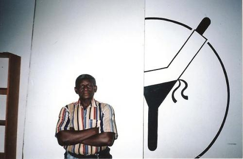

mestre sombra

jogar capoeira é pôr o corpo em oração.
capoeira luta sem vencer, por isso vence sem lutar.
имя: roberto teles de oliveira
дата рождения: 6.02.1942
город: santa rosa de lima, brasil
группа: senzala
роберто телес де оливейра родился 6 февраля 1942 г. в г. санта-роза де лима на севере бразилии, штат сержипе, в семье мелких лавочников.
сначала он работал в строительной торговле в г. акаражу, столице штата, затем переехал в г. сантос, большой порт сан-пауло, более чем за тысячи миль от акаражу. некоторое время роберто был разнорабочим, в 1968 году он трудоустроился портовым грузчиком.
в 1963 году он повстречался с группой капоэйры bahia do berimbau, возглавляемая 60-летним бывшим кофейным мастером из баии — olimpio bispo dos santos. обычно группа встречалась в районе itapema (cейчас vincente de carvalho).
только после смерти мастера олимпио в 1972 году группа без особых трудностей переместилась в сантос под руководством mestre sombra, который уже был известен как мастер капоэйры.
в 1974 году после их легализации и признании как группы капоэйры в ассоциации zumbi (по имени легендарного предводителя и борца за свободу quilombo dos palmares, они выдвинулись в столицу штата сан-пауло, на 50 миль вглубь страны, для того, чтобы учредить федерацию капоэйры г. сан-пауло. в 1975 году группа нашла свое место для тренировок неподалеку от доков в сантосе, rua bras cubas, № 227, где существует и поныне. они сменили свое название на senzala (негритянские кварталы на плантациях в стародавние времена).
академия senzala воспитала несколько поколений продвинутых капоэйристов, наставников и мастеров. достижения mestre sombra оценены по достоинству не только в сантосе, но и в окрестностях, бесчисленное множество мероприятий по капоэйре и семинаров, в которых приняла участие группа senzala, а также образование новых академий капоэйры — во многом заслуга старых учеников mestre sombra.
школы капоэйры в сантосе объединились в liga santista de capoeira, в которой mestre sombra является почетным председателем, кроме этого он также вошел в совет негритянских общин (santos black community council).
в 1993 году возвратившись в доки в сантосе он отважился вернуться в торговлю, организовав небольшой капоэйрский магазинчик bazar senzala в нескольких сотнях ярдов от академии. часто его приглашают принять участие в фестивалях и семинарах по капоэйре в бразилии, европе и америке для того чтобы поддержать связь с учениками и дать мудрых советов по обучению капоэйре.
принял участие в записи двух cd — один в париже c mestre beija-flor, второй — в сантосе, c mestre bahia. оба мастера — бывшие ученики mestre sombra.
source: capoeira angola palmares (france)